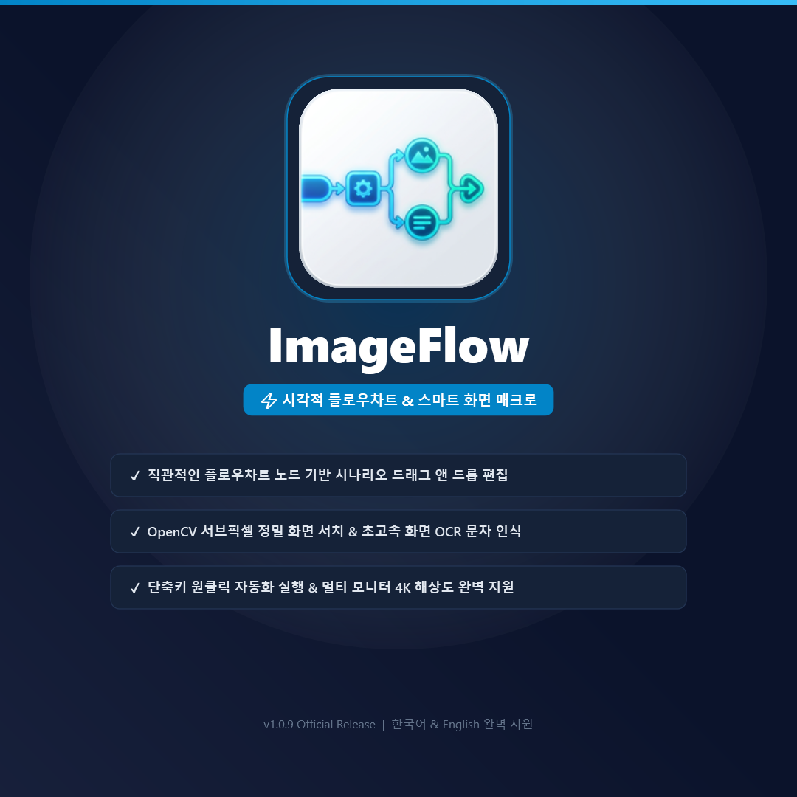

화면 인식 자동화부터 파일 지능형 정리, 마우스 제스처 창 제어, 화면 오버레이 핀까지.
FlowSuite의 4대 핵심 유틸리티가 당신의 일일 데스크톱 작업 시간을 90% 이상 단축해 드립니다.
각각의 도구는 독립적으로도 완벽하며, 함께 사용할 때 상상 이상의 시너지를 발휘합니다.
"선만 연결하면 완성되는 노코드 화면 자동화"
복잡한 코딩(Script) 없이 화면 이미지를 마우스로 지정하고 선만 연결하면 알아서 동작하는 비주얼 순서도 기반 업무 자동화 도구입니다. ERP 자동 로그인, 엑셀/웹 반복 클릭, 화면 감지 클릭을 손쉽게 구현합니다.

"0.1초 실시간 감시 & Explainable AI 기반 스마트 파일 정리"
다운로드 폴더나 업무 드라이브에 신규 파일이 들어오는 즉시 0.1초 만에 감지하여, 나이브 베이즈 머신러닝 및 키워드 규칙으로 최적의 프로젝트 하위 폴더에 자동 분류해 주는 차세대 파일 허브 시스템입니다.
"마우스 우클릭 드래그 하나로 윈도우 창과 단축키를 광속 제어"
마우스를 살짝 긋는 동작만으로 창 닫기, 최소화, 최대화, 가상 데스크톱 전환, 웹 브라우저 탭 이동 등 자주 쓰는 동작을 키보드에 손 올릴 필요 없이 즉각 실행합니다.
"작업 화면 위에 항상 떠 있는 투명 이미지 핀 & 참조 도구"
디자인 시안, 참고 문서, 코드 스니펫, 수식 이미지를 화면 최상단(Always-on-Top)에 고정해두고 투명도를 조절하며 작업할 수 있는 디자이너/개발자/사무직 필수 유틸리티입니다. (Windows 및 macOS 동시 지원)
FlowSuite의 도구들은 당신의 데스크톱을 가장 완벽한 생산성 워크스테이션으로 탈바꿈시킵니다.
마우스 제스처로 작업 창들을 순식간에 정렬하고 필요한 툴을 바로 띄웁니다.
필요한 가이드 시안이나 데이터를 화면 위에 투명하게 띄워두고 작업합니다.
손이 많이 가는 반복 클릭과 시스템 입력을 노코드 순서도로 대신 처리합니다.
완성된 결과물과 다운로드 파일들을 AI가 알아서 폴더별로 0.1초 만에 정리합니다.